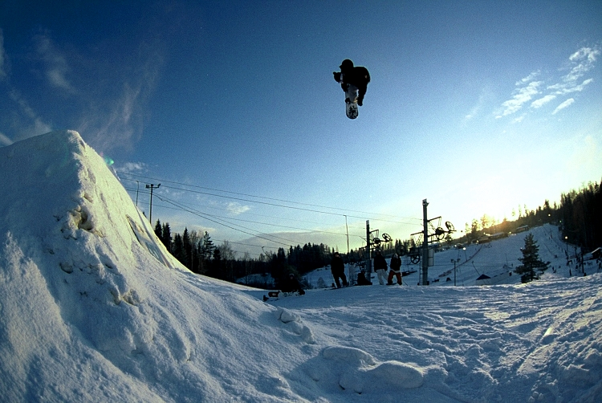

Valokuvaus / 2006–2026
Valokuva-
arkisto.
Rullalautailua, lumilautailua, ihmisiä ja paikkoja vuosilta 2006–2026.
Selaa 190 kuvan arkistoa
18 / 190 kuvaa
18 / 190 kuvaa
Avaa kuva · ← → selaa · Esc sulkee
05 / Yhteys
Yhteys.
Nimi
Sami Karesniemi
Yritys-IT · tietoturva · konenäkö
Profiilit
Sähköposti
Kirjoita apua tai valitse komento.